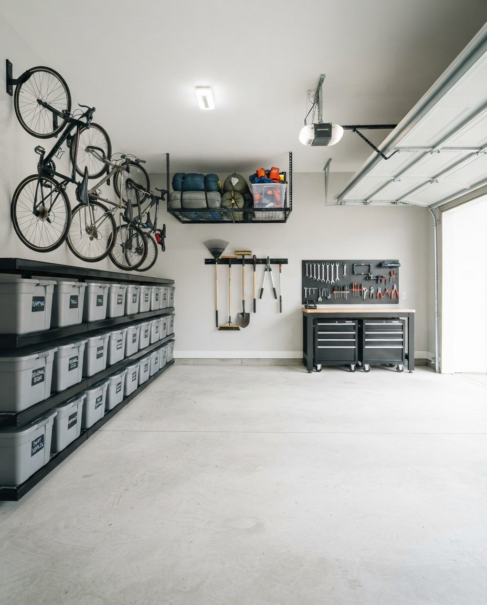
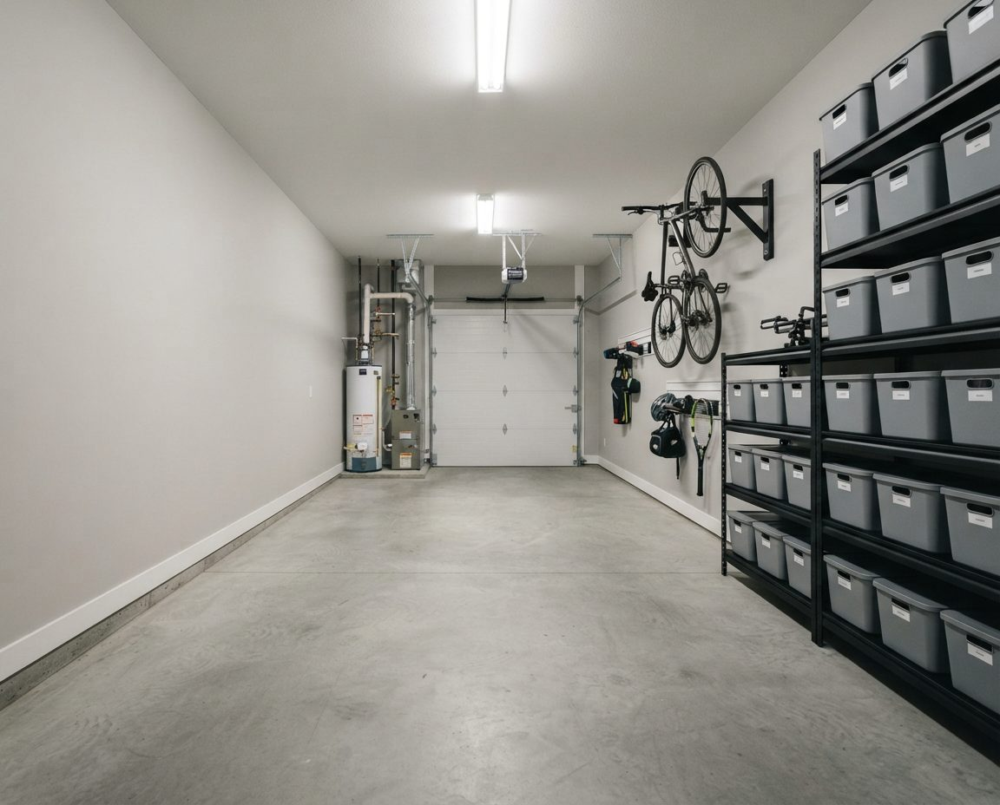

Organizing a Garage on a Hillside
Most of West Vancouver climbs. British Pacific Properties has been building on the slopes of Cypress Mountain since the 1930s, and the British Properties, Chartwell, Cypress Park and Westmount sit above the Upper Levels Highway with views over the water. Below the highway are the village streets of Ambleside and Dundarave, and to the west the waterfront neighbourhoods of Caulfeild and Eagle Harbour, then Horseshoe Bay at the ferry terminal. The housing runs from West Coast Modernist homes on the hillside to waterfront estates.
That terrain shapes the garage. Houses on a slope tend to put the garage at street level and the living space above or below it, so the garage is often cool, partly underground and the main way into the house. Bigger homes add a third or fourth bay. And because the mountain and the water are both a few minutes away, the garage stores more gear per person than almost anywhere else in the region.
This page covers how we organize those garages: the layout, the storage hardware and the habits that keep it working. If your garage first needs a deep clean, an estate clearance or a pre-listing cleanout, our garage cleaning in West Vancouver page covers that work, and the two are often booked back to back.
Multi-Bay Garages: One Job per Bay
A three or four bay garage fails in a predictable way. Everything spreads evenly across every bay, nothing has a home, and the cars end up on the driveway in the rain. The fix is to give each bay a single job and store only that job's things in it. A split we often land on:
- Bay nearest the house door: the daily car, a landing zone for shoes, bags and the dog leash, the cart station and the freezer.
- Middle bay: the second car, with the bike rail and the ski and paddle wall on the side wall beside it.
- Far bay: the workshop, the seasonal store, or the boat, trailer or project car, with its own shelving and its own labels.


Two bays back to cars, one wall of storageAn example layout, not a photo of a West Vancouver client's garage. In a three-bay garage the same approach frees the far bay for a workshop or a boat.
Labels carry the system. Each bin is labelled with its contents and its bay, and we leave a one-page zone map taped inside a cabinet door. When a contractor, house sitter or property manager is in the house, they can put things back without asking. Large houses also collect duplicates: three ladders, two pressure washers, a stack of coolers. Spares go out with us for donation on the day, which is often what frees the third bay. When the whole garage needs a heavier cut first, our garage decluttering service runs ahead of the build.
Under-House Garages on Steep Lots
Garages built into the hill under the house bring their own constraints. The back wall is often a concrete retaining wall against wet ground. Ceiling height can be lower than in a detached garage, with ducts, pipes and beams in the way. The door into the house may be at the top of a short stair rather than flush with the floor. And on a steep driveway, rain runs toward the overhead door.
So we plan these garages from the ceiling and the walls inward. Overhead racks go only where we have measured clearance from the door track, the opener and the roof of the tallest vehicle. Shelving goes on the dry side walls first, and on a retaining wall only with a gap behind it. The first metre inside the overhead door stays clear so wet tires and runoff never reach stored items, and the landing zone sits at the foot of the stairs to the house, where shoes and bags get dropped.
The North Shore Gear Wall
Cypress Mountain sits above the British Properties with skiing in winter. The Baden-Powell Trail crosses the slopes for hikers and runners, and the marinas and beaches from Ambleside to Horseshoe Bay bring out paddleboards, kayaks and boats in summer. A family garage can easily hold four sets of skis or boards, four bikes, two paddleboards and a kayak, plus the boots, helmets, wet suits and life jackets that go with them.

We build that gear onto one wall, close to the door it leaves by. Skis and boards stand in a wall rack with boots, gloves and helmets on an open shelf beside them so they dry between days on the hill. Bikes hang from a rail by the front wheel, with a pump and a small tool bin at the end. Wet suits and life jackets hang on open hooks rather than in a closed bin. Paddleboards and kayaks go on padded wall cradles or a ceiling hoist above the hood of a parked car, and we check that the overhead door clears them fully open. Our garage bike storage guide goes deeper on wall rails, e-bike charging and theft hardening, and the North Vancouver garage organization page covers gear walls next door on the North Shore.
Carts, Freezers and Bears
Black bears come down into West Vancouver neighbourhoods, and the District's guidance puts the garage at the centre of keeping them away. It asks residents to keep garbage and the Green Can in a garage, basement or other wildlife-secure location during the week, set them out after 5 a.m. on collection day rather than the night before, and bring them back in by 9 p.m. It also suggests freezing meat, fish, bones and plate scrapings until the morning of pickup, removing outdoor freezers, feeding pets inside, and taking down bird feeders or making them unreachable. The District's bylaws require wildlife attractants to be managed responsibly.

Nearly every item on that list ends up in the garage, so we give it a proper station:
- A marked cart bay inside the overhead door with room for the lids to open fully, so the carts roll straight out at 5 a.m. without moving anything.
- A chest freezer with a labelled scraps bin for meat and fish waste between pickups, moved inside from the deck if it lives outdoors now.
- Pet food and bird seed in gasketed bins on a shelf, never in paper sacks on the floor.
- Barbecue parking in the garage with the grill cleaned and covered.
- Rinsed recycling in a box with a lid, emptied on a schedule so it never smells.
Then the door stays shut. An overhead door left open on a summer evening undoes the rest.
Rain on the Slopes: Keeping Stored Things Dry
The North Shore mountains catch more rain than the rest of the region. During one fall storm the North Shore News reported 110 millimetres at a weather station partway up Cypress Bowl Road, the most of any spot in Metro Vancouver that week and about double the total at Vancouver International Airport. Higher homes and garages set into the hillside live with that moisture for months.

Cardboard is the first thing to go. It absorbs moisture from the air and the slab, softens, and starts to smell. Our standard fixes: everything moves into lidded plastic bins; shelving starts a few centimetres off the floor; units stand slightly away from exterior and retaining walls so air moves behind them; tools that rust hang on a wall instead of sitting in a box; and paper records, photos and textiles go into the house rather than the garage. If walls or the slab already show mould or white mineral bloom, our guide to mould in Vancouver garages explains what to clean, what to leave to a professional, and why.
The Car Bay and EV Charging
The District has moved to make home charging standard: the North Shore News reported council approving a requirement that new single-family and duplex homes include an EV charging space, and that every stall in new multi-family buildings be wired for Level 2 charging. A charger only helps if the car can reach it. We keep a clear path from the charger to the car's port, mount the cable hook beside the unit, and keep shelving and bins out of the swing of the car doors. Our EV charger garage organization guide covers charger placement and cable routing in detail.
Older Ambleside and Dundarave Garages
Not every West Vancouver garage is a three-bay. Older homes on the flatter streets of Ambleside and Dundarave often have a narrow single garage or carport, and townhouses near the villages have long tandem garages. In those, depth and the side walls do the work: shallow shelving down one wall, bikes hung flat against the other, and overhead racks for anything used once a year.


Narrow garages work from the side wallsAn example tandem layout, not a West Vancouver client's garage. Shallow shelving and wall-hung bikes keep the full length open for a car.
How the Job Runs
We start with a free on-site visit, walk the garage with you, agree what each bay or wall is for, and send a written plan with a fixed price. On the day we pull everything out onto the driveway, sort it into keep, donate, recycle and dispose, clean the empty floor, then build back in: cart station and freezer first, then daily gear, then the ski, bike and paddle wall, then seasonal storage and the workshop. Donations and disposal leave with us. A double garage is usually one day; a three or four bay garage is usually two.
Shelving, bins, rails and hoists are quoted separately at cost, and we are happy to reuse what you already own. For new hardware chosen for a coastal garage, see our garage storage solutions in Vancouver. Before anything heavy goes on a wall, our earthquake-ready garage storage guide explains why we fix shelving to studs and keep heavy items low.